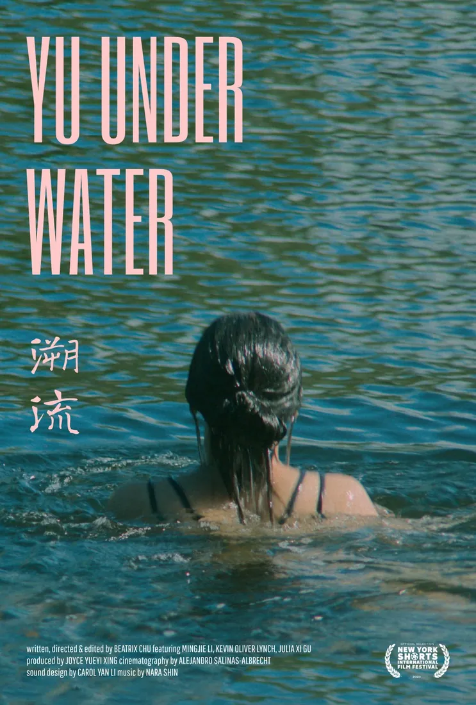
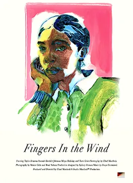
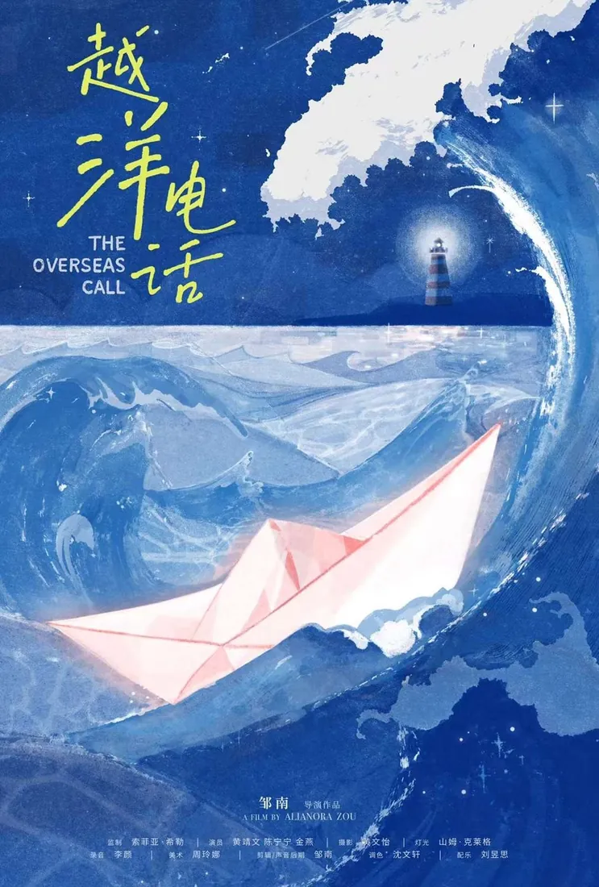
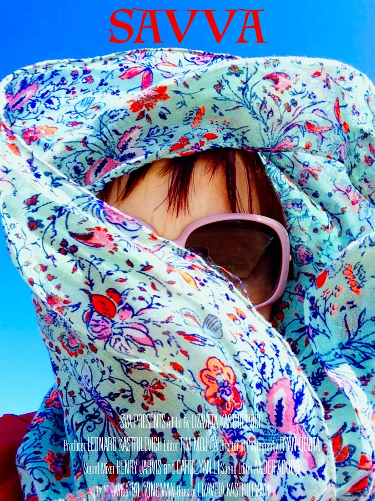
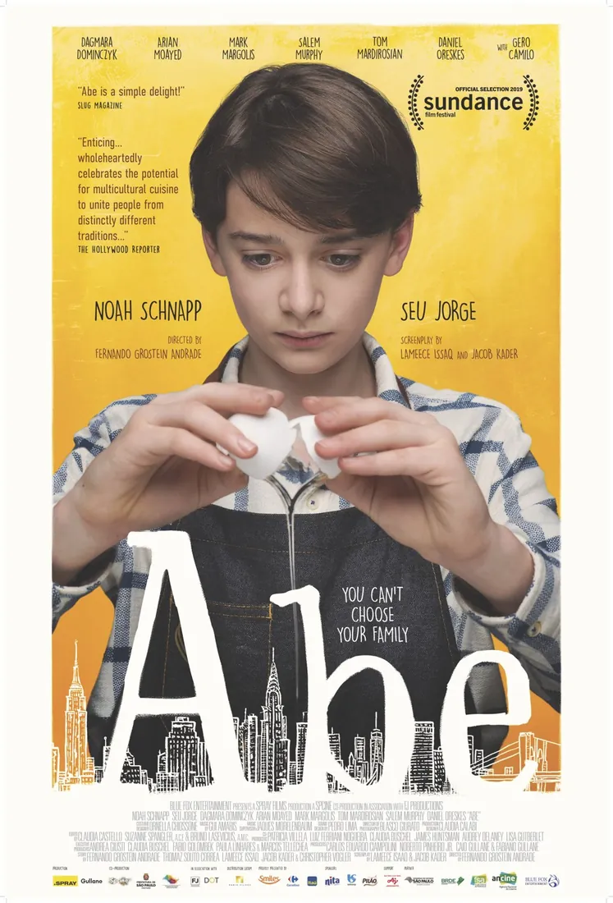

Carol Yan Li李颜
Creative sound design&mixing for films, games and multimedia.
为电影、游戏与多媒体提供创意声音设计与混音。





01 / 09
Creative sound design&mixing for films, games and multimedia.
为电影、游戏与多媒体提供创意声音设计与混音。




